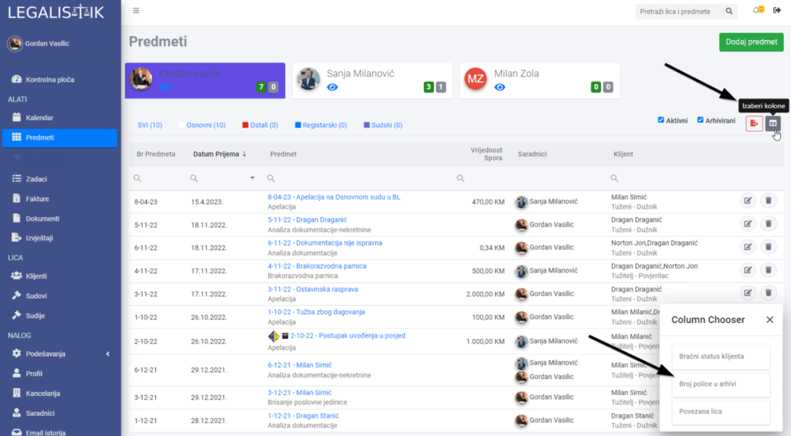
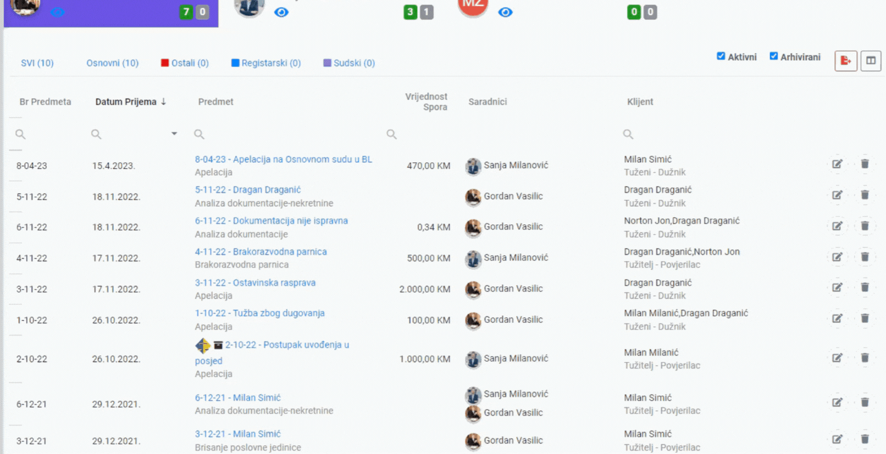

U listi predmeta možete određivati koje kolone su vidljive a koje ne. Sve što treba da uradite je da kliknete na ikonu “Izaberi kolone” iznad liste. Otvoriće vam se prozor u kojem su izlistana polja koja se trenutno ne prikazuju kao kolona u listi.

Da bi dodali polje kao kolonu, prevucite polje na željeno mjesto u listi. Isto tako, ako vam kolona nije potrebna u prikazu, možete je sakriti tako danaziv kolone prevučete nazad u listu skrivenih kolona:
